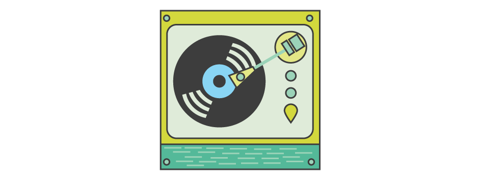
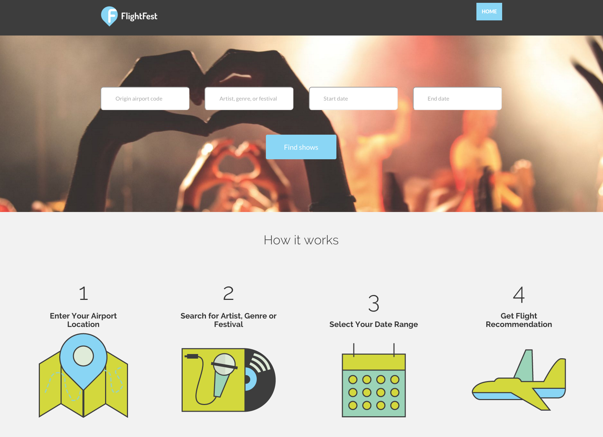

FLIGHTFEST
Connecting music lovers with flights around the globe.
FlightFest is a web app that helps you discover concerts and festivals around the world and suggests flights to get there. The user enters his/her origin airport, then the artist/genre/festival they'd like to see, as well as a date range. They can then view a map of upcoming shows, including date, location, ticket price and a link to buy flights. The app displays flights that leave from airports near the origin airport and arrive at airports near the venue. I worked on creating the visual language and front-end development alongside fellow back-end developer Allen Sussman. I would describe this experience as a true collaboration and am extremely proud of what we created in such a short amount of time.
THE MARK
FlightFest needed a simple, but strong logo to represent how they are open, young and sophisticated.
I decided that the mark needed to clearly represent the themes of travel, simplicity and openness.
THE STYLE
FlightFest uses a light, but slightly muted color palette to convey their sense of playfulness. The cool colors of the green palette evoke professionalism and stability, which are balanced with bolder accent colors for emphasis.
Since the app is very visual-focused, illustrations offer a fun and informal experience to help guide the user through their journey of searching for an artist to purchasing tickets. Illustrations are also used to help downplay potentially disruptive aspects for the user, such as waiting for the app to load their search results, or if they receive an error message.
THE PROTOTYPE
FlightFest began focusing on the pain points and needs of our user persona, a music enthusiast. The app uses the StubHub API to grab information about concerts. To do things like find nearest airports to venues and translate between local and venue timezone, we used data from OpenFlights. We used MapBox to display the map with drop pins of all the available upcoming concerts and festivals. Integrating with Kayak was essential for displaying flight options.
